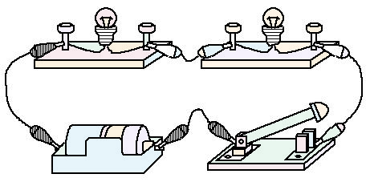
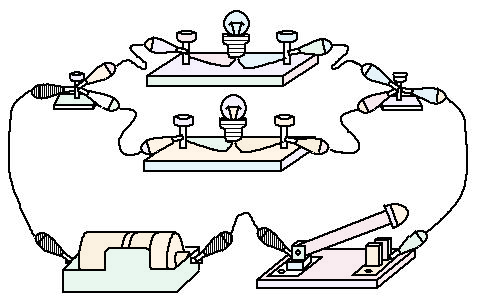

1回路と、電流の流れるもの・流れないもの
📖 説明
電池・スイッチ・豆電球などを導線でつなぐと、豆電球が光ります。このように、電流が流れる道すじを回路といいます。
電流は、電池の＋極から出て、回路を通って−極にもどる向きに流れると決められています。
金属のように電流が流れるものを導体といいます。ガラスやプラスチック、ゴムのように電流が流れない(流れにくい)ものを不導体(絶縁体)といいます。
★ 覚えよう!
- 回路……電流が流れる道すじ
- 電流の向き……電池の＋極から出て、−極にもどる
- 導体……金属などの、電流が流れるもの
- 不導体(絶縁体)……ガラス・プラスチック・ゴムなどの、電流が流れないもの
📚 語群 ― タップして選び、説明文の空欄をタップ!
✏️ ミニテスト(全4問)
問1ガラスは電流が流れるので導体である。
× ガラスは電流が流れない不導体(絶縁体)です。
問2電流は、電池の＋極から流れ出る向きと決められている。
○ 正解です。電流は＋極から出て、回路を通って−極にもどります。
問3電流が流れるひとまわりの道すじを何というか。
正解はイ。電流が流れる道すじを回路といいます。
問4次のうち、導体はどれか。
正解はエ。銅は金属なので電流が流れる導体です。ほかは不導体です。
🏆 ベストタイム
2直列回路と並列回路
📖 説明
電流の道すじが1本につながっている回路を直列回路、途中で2本に分かれている回路を並列回路といいます。

直列回路 道すじが1本

並列回路 道すじが2本
直列回路では、豆電球を1つゆるめると道すじが切れてしまうので、もう1つの豆電球も消えます。
並列回路では、1つの豆電球をゆるめても、もう1本の道すじには電流が流れつづけるので、もう1つの豆電球は点灯したままです。ただし電圧は変わらないので、明るさの変化はありません。
★ 覚えよう!
- 直列回路……道すじが1本。1つはずすと、全部消える
- 並列回路……道すじが2本に分かれる。1つはずしても、ほかは点灯したまま(明るさも変わらない)
📚 語群 ― タップして選び、説明文の空欄をタップ!
✏️ ミニテスト(全4問)
問1直列回路で豆電球Aをゆるめると、豆電球Bも消える。
○ 直列回路は道すじが1本なので、1か所切れると電流が流れなくなります。
問2並列回路で豆電球Aをゆるめると、豆電球Bは暗くなる。
× 並列回路では、Bのある道すじには電流が流れつづけ、電圧も変わらないので、Bの明るさは変わりません。
問3電流の道すじが途中で2本に分かれている回路を何というか。
正解はア。道すじが2本に分かれている回路は並列回路です。
問4豆電球2個を並列につないだ。1個をソケットからはずしたとき、もう1個の豆電球はどうなるか。
正解はウ。並列回路では、もう一方の道すじに電流が流れつづけます。電圧も変わらないので、明るさも変わりません。
🏆 ベストタイム
3電気用図記号と回路図
📖 説明
回路を電気用図記号(決まった記号)を使って表した図を回路図といいます。電池・豆電球・スイッチ・抵抗・電流計・電圧計の記号を覚えましょう。
| 名前 | 電気用図記号 | はたらき |
|---|---|---|
| 電池 | 電流を流すもと。長い線が＋極、短い線が−極 | |
| 豆電球 | 電流が流れると光る | |
| スイッチ | 回路を入れたり切ったりする | |
| 抵抗 | 電流の流れにくさをもつ(電熱線など) | |
| 電流計 | 電流の大きさをはかる | |
| 電圧計 | 電圧の大きさをはかる | |
| 導線の交わり | 黒い点(●)があるところは、導線がつながっている |
電池の記号では、長い線が＋極、短い線が−極を表します。
直列回路の回路図
並列回路の回路図
導線が交わっているところに黒い点(●)があれば、導線がつながっていることを表します。
★ 覚えよう!
- 電池……長い線が＋極、短い線が−極
- 豆電球……○の中に× ／ 抵抗……四角
- 電流計……Ⓐ ／ 電圧計……Ⓥ
- 導線の交わり……黒い点(●)があるときだけ、つながっている
📚 語群 ― タップして選び、説明文の空欄をタップ!
✏️ ミニテスト(全4問)
問1電池の電気用図記号はどれか。
正解はウ。電池の記号は、長い線(＋極)と短い線(−極)を組み合わせた形です。
問2電圧計の電気用図記号はどれか。
正解はア。電圧計はⓋ、電流計はⒶで表します。
問3Ⓐは、電圧計を表す記号である。
× Ⓐは電流計の記号です。電圧計はⓋです。
問4回路図で、導線が交わるところに黒い点(●)があるときは、導線がつながっていることを表す。
○ 黒い点があるところは、導線がつながっています。